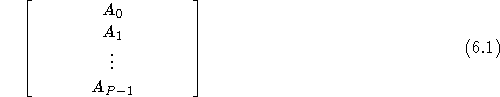
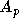

As with the other interfaces in HYPRE, the IJ interface
expects to get data in distributed form because this is the only
scalable approach for assembling matrices on thousands of processes.
Matrices are assumed to be distributed by blocks of rows as follows:

In the above example, the matrix is distributed accross the P
processes, 0, 1, ..., P-1 by blocks of rows. Each submatrix 
is ``owned'' by a single process and its first and last row numbers
are given by the global indices ilower and iupper in the
Create() call below.
The following example code illustrates the basic usage of the
IJ interface for building matrices:
TheMPI_Comm comm; HYPRE_IJMatrix ij_matrix; HYPRE_ParCSRMatrix parcsr_matrix; int ilower, iupper; int jlower, jupper; int nrows; int *ncols; int *rows; int *cols; double *values; HYPRE_IJMatrixCreate(comm, ilower, iupper, jlower, jupper, &ij_matrix); HYPRE_IJMatrixSetObjectType(ij_matrix, HYPRE_PARCSR); HYPRE_IJMatrixInitialize(ij_matrix); /* set matrix coefficients */ HYPRE_IJMatrixSetValues(ij_matrix, nrows, ncols, rows, cols, values); ... /* add-to matrix cofficients, if desired */ HYPRE_IJMatrixAddToValues(ij_matrix, nrows, ncols, rows, cols, values); ... HYPRE_IJMatrixAssemble(ij_matrix); HYPRE_IJMatrixGetObject(ij_matrix, (void **) &parcsr_matrix);
Create() routine creates an empty matrix object that lives
on the comm communicator. This is a collective call (i.e.,
must be called on all processes from a common synchronization point),
with each process passing its own row extents, ilower and
iupper. The row partitioning must be contiguous, i.e.,
iupper for process i must equal ilower-1 for
process i+1. Note that this allows matrices to have 0- or
1-based indexing. The parameters jlower and jupper
define a column partitioning, and should match ilower and
iupper when solving square linear systems. See the Reference
Manual for more information.
The SetObjectType() routine sets the underlying matrix object
type to HYPRE_PARCSR (this is the only object type currently
supported). The Initialize() routine indicates that the matrix
coefficients (or values) are ready to be set. This routine may or may
not involve the allocation of memory for the coefficient data,
depending on the implementation. The optional SetRowSizes()
and SetDiagOffdSizes() routines
mentioned later in this chapter and in the Reference Manual, should be
called before this step.
The SetValues() routine sets matrix values for some number of
rows (nrows) and some number of columns in each row
(ncols). The actual row and column numbers of the matrix
values to be set are given by rows and cols.
After the coefficients are set, they can be added to with an
AddTo() routine. Each process should set only those matrix
values that it ``owns'' in the data distribution.
The Assemble() routine is a collective call, and finalizes the
matrix assembly, making the matrix ``ready to use''. The
GetObject() routine retrieves the built matrix object so that
it can be passed on to HYPRE solvers that use the ParCSR
internal storage format. Note that this is not an expensive routine;
the matrix already exists in ParCSR storage format, and the
routine simply returns a ``handle'' or pointer to it. Although we
currently only support one underlying data storage format, in the
future several different formats may be supported.
One can preset the row sizes of the matrix in order to reduce the
execution time for the matrix specification. One can specify the
total number of coefficients for each row, the number of coefficients
in the row that couple the diagonal unknown to (Diag) unknowns
in the same processor domain, and the number of coefficients in the
row that couple the diagonal unknown to (Offd) unknowns in
other processor domains:
HYPRE_IJMatrixSetRowSizes(ij_matrix, sizes); HYPRE_IJMatrixSetDiagOffdSizes(matrix, diag_sizes, offdiag_sizes);
Once the matrix has been assembled, the sparsity pattern cannot be
altered without completely destroying the matrix object and starting
from scratch. However, one can modify the matrix values of an already
assembled matrix. To do this, first call the Initialize()
routine to re-initialize the matrix, then set or add-to values as
before, and call the Assemble() routine to re-assemble before
using the matrix. Re-initialization and re-assembly are very cheap,
essentially a no-op in the current implementation of the code.